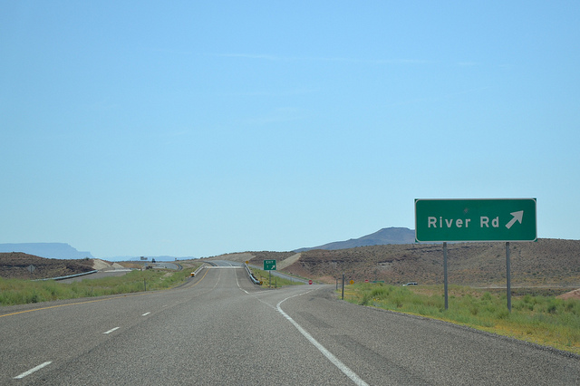

– Steve Jobs
 http://www.flickr.com/photos/marthinshl/7263883898/
http://www.flickr.com/photos/marthinshl/7263883898/
- Who am I?
Leo Lanese. Web Developer
- What do I do?
javaScript, HTML5 and CSS
- What are we going to chat about?
* RWD, MF and PE. Why do we need all these methodologies together?
* I would like to share my experience in implementing these methodologies
* We are going to chat about some new ideas and how these are going to change the way
we are thinking and working

@leolaneseltd
AC: As a user, I want to be able to use a "Web site" to connect "the Web" from my "Desktop"
We could consider "the Web"
as the "internet service" ,
the "Web Sites" is the "interface"
and the "Desktop" is the "device"
"Web sites will be just one of many interfaces we will use to interact with a service"- @yiibu
"the Web" is the "internet service"
"Web Sites" is the "interface"
"Desktop" is the "device"
Desktops Web Sites
Laptops Web Sites
Mobiles Web Sites
Tablets Web Sites
e-books Web Sites
(because they will be asking next week)
Watches Web Sites
TVs Web Sites
Windows Web Sites
Kitchen Web Sites
Glasses Web Sites
Oh mama! ...
The number of devices are growing
out of control!
 http://www.flickr.com/photos/11136492@N02/3721448864
http://www.flickr.com/photos/11136492@N02/3721448864
so ... more devices = more resources and developing time
The question is:
How can we develop for all current and future devices?


Responsive Web Design is the new revolution that changes everything, eliminating the need for a different development phases for each new gadget on the market
http://www.flickr.com/photos/misterno/5787984204
Responsive Web Design, give us the chance to create only one Web
One Web capable of flowing through all platforms, devices and brands and those that are about to come
Just one Web, one project and one team
 http://www.flickr.com/photos/generalnoir/391009102
http://www.flickr.com/photos/generalnoir/391009102
1- A flexible, grid-based layout
eg: font sizes relative units
eg: 960px, flexible grids
2- Flexible images and media
eg: max-width flexible images ... it's a hack?
eg: max-width container
eg: BBC News responsive images (C/S side)
eg: Get involved: W3C proposal Responsive images (C side)
http://uk.ign.com
3- media queries
eg: media queries
eg: media queries working
Performance is the key, don't feel like we need to create 20 complex media queries ... just 3: "S, M and L" and always start from "S"
Small, Medium, Large
"The terms 'mobile' and 'tablet' are so broad as to be unhelpful for describing what we're trying to do.",-@beep
"If we're after more future-proof responsive designs, we should stop thinking in terms of '320px', '480px', '768px' or whatever ...Instead, we should focus on breakpoints tailored to the design we're working on",-@RWD
 http://www.flickr.com/photos/meetrajesh/6972883401/
http://www.flickr.com/photos/meetrajesh/6972883401/
-
In order to create a better UNIQUE user-experience, we need to start from the simplest layout and functionality of our CONTENT
-
Then we need to add on top of that, the basic core of the content using media-queries
-
We need to keep it simple. The content needs to be simple
-
Mobile First follows progressive enhancement principles
eg: Mobile First example
Soon 'Content' will be everywhere. Most gadgets will be connected.
Our content needs to be fluid and ready to understand them
"Get your content ready to go anywhere because it is going to go everywhere",- @brad_frost
 http://www.flickr.com/photos/rosh/246187583/
http://www.flickr.com/photos/rosh/246187583/


Bruce_Lee @DrummerHead

Both are about how well a site works on different browsers and devices
The difference is where they place their emphasis and how this affects the workflow.
GD differs from PE because GD is the path from complexity to simplicity, whereas PE is the path from simplicity to complexity http://www.flickr.com/photos/lonelycoo/3313530719/
Focuses on building the website for the most advanced/capable browsers. Older browsers are expected to have a sub-standard, but acceptable user-experience
Testing for support in older browsers, is not cover or relegated to the end of the list of priorities
Bases on "fault tolerance's" and Enphasis on the content. Not browsers
Allows us to access to our content, regarless of its capabilities
Allows us to feature detect, adapt and keep up with the latest environments and capabilities
Generates Progressive user-experiences
We start with the lowest common denominator as our baseline and we add layers on top
"Progressive enhancement is essential for the web now more than ever",- @stephanierieger
"Getting into the progressive enhancement mindset is quite simple:
just think from the content out"- @AaronGustafson
eg: border IE and WebKit
http://www.flickr.com/photos/treehouse1977/496088319/Working with fallback or emulation mode (polyfills)
CHROME 18
<html class="js flexbox flexbox-legacy canvas canvastext webgl no-touch geolocation
postmessage websqldatabase indexeddb hashchange history
draganddrop websockets rgba hsla multiplebgs backgroundsize
borderimage borderradius boxshadow textshadow opacity
cssanimations csscolumns cssgradients cssreflections csstransforms
csstransforms3d csstransitions fontface generatedcontent video
audio localstorage sessionstorage webworkers applicationcache
svg inlinesvg smil svgclippaths cookies cssresize cssscrollbar
no-devicemotion deviceorientation fullscreen json">
IE 8
<html class="js no-flexbox canvas canvastext no-webgl no-touch geolocation postmessage
no-websqldatabase no-indexeddb hashchange no-history draganddrop no-websockets
rgba hsla multiplebgs backgroundsize no-borderimage borderradius boxshadow
no-textshadow opacity no-cssanimations no-csscolumns no-cssgradients
no-cssreflections csstransforms no-csstransforms3d no-csstransitions
fontface generatedcontent video audio localstorage sessionstorage no-webworkers
no-applicationcache no-svg inlinesvg smil svgclippaths">
Modenizr feature list Modenizr feature list
js or not js?. javaScript as a feature.
Device features html5test ringmark canIuse
Working fallback: Modernizr .svg Conditional CSS .svg
yepNope + Modernizr yepNope + Modernizr
Study Case: bostonglobe.com 2010 bostonglobe.com 2012
Study Case: BBC News.com BBC homepage
Study Case: SONY
Study Case: World Wildlife Fund Earth Hour
http://www.flickr.com/photos/marthinshl/7263883898/ which is passing through Responsive Web Design's various shapes
Progressive Enhancement tells us what features to manage to improves the UX